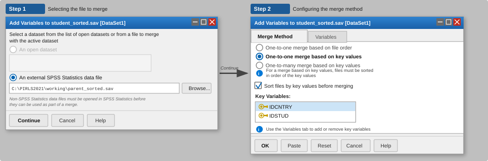
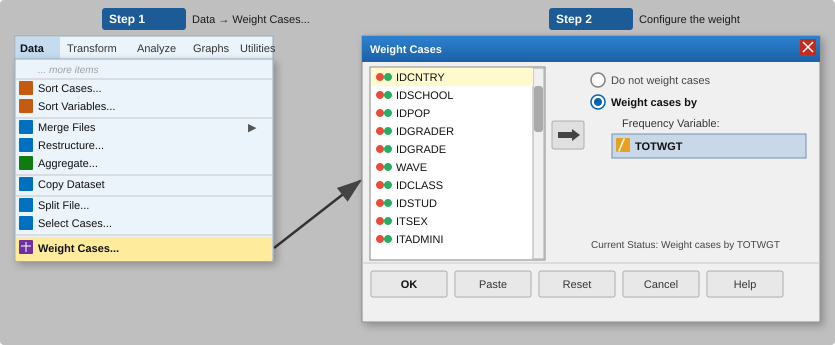
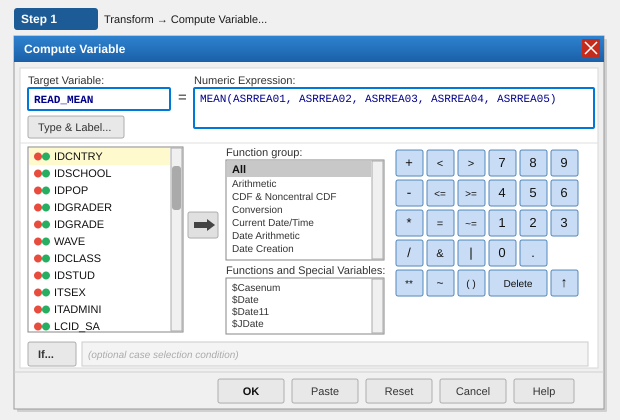
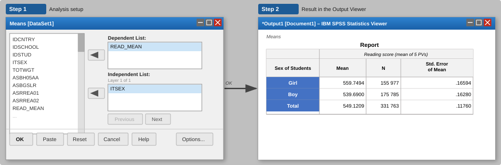
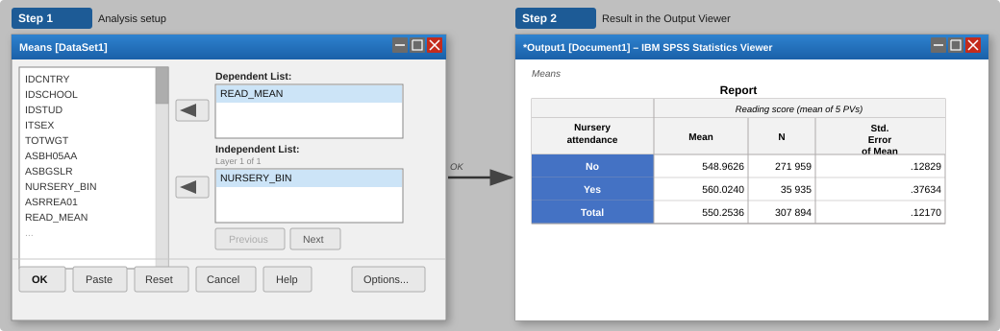
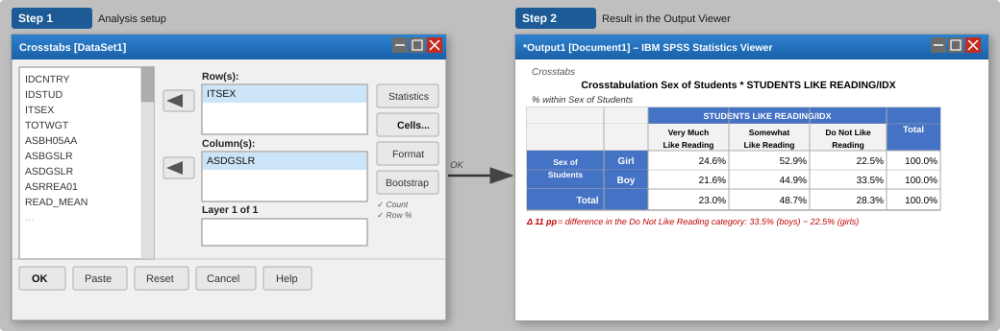

PIRLS case study analysis with SPSS
1 Introduction
This guide shows how to use SPSS to work with data from international large-scale assessments. It is built around examples from PIRLS 2021 (Progress in International Reading Literacy Study), which measures the reading comprehension of fourth-grade students. Studies of this kind are run by two main organisations: IEA (International Association for the Evaluation of Educational Achievement), responsible for TIMSS, PIRLS, ICCS and ICILS, among others, and OECD, which runs studies such as PISA, TALIS and PIAAC.
The guide is intended for those who want to become familiar with the data efficiently, prepare variables for analysis and obtain initial descriptive results. It does not require advanced knowledge of statistics. Its aim is to demonstrate what can be done in SPSS conveniently and correctly at the data-preparation stage, while also indicating when it is worth turning to tools specifically designed for analysing the data from IEA and OECD studies — most notably the IEA IDB Analyzer, which integrates directly with SPSS and enables these analyses to be carried out without switching to another software package.
2 Why is SPSS useful for working with these data?
PIRLS data, like data from other international large-scale assessments, are distributed in the .sav format, the native file format for SPSS. When a file is opened, all variable and value labels are immediately available — one of the clear advantages of working in SPSS, as this software offers both a user-friendly graphical interface and the option to work with syntax. You can quickly review the structure of the dataset, examine response distributions, merge files from different questionnaires and prepare variables for further analysis, without having to install additional packages or perform any additional data processing.
SPSS is particularly useful for:
- opening and reviewing
.savfiles with variable and value labels - merging data files from different questionnaires (student, school, teacher)
- appending national (country-specific) questionnaire items to the international database
- checking missing data and examining variable distributions
- recoding variables and creating simple indicators
- calculating sums and means across multiple questionnaire items
- producing preliminary exploratory tables and charts
- preparing an output file for further analyses
SPSS works well as a first tool when working with these data. It allows you to quickly become familiar with the structure of the dataset, assess data quality and prepare variables for subsequent analyses. However, if you want to determine whether differences between groups of students are statistically significant, the standard SPSS procedures have important limitations that follow from the complex design of these data. Although OECD provides dedicated SPSS macros that allow these calculations to be conducted properly, they are considerably more complex to use than dedicated tools or packages such as IEA IDB Analyzer, Rrepest, repest or intsvy. Guides to these tools are available on the IBE-PIB website: ibe.edu.pl/en/data/how-to-analyze-data-from-international-large-scale-assessments-ilsa.
| Task | SPSS | Dedicated tool |
|---|---|---|
| Opening and reviewing files | ✔ | ✔ |
| Merging questionnaire data files | ✔ | ✔ |
| Recoding variables | ✔ | ✔ |
| Creating exploratory tables and charts | ✔ | ✔ |
| Calculating weighted percentages | ✔ | ✔ |
| Calculating point estimates of means from PVs | ✔ | ✔ |
| Correct standard errors | ✘ | ✔ |
| Testing differences between groups | ✘ | ✔ |
| Full analysis of achievement scores (PVs) | ✘ | ✔ |
The limitations described in the table above do not mean you have to abandon SPSS. The IEA IDB Analyzer is a free tool that integrates directly with SPSS — unlike the Rrepest, repest or intsvy packages, which require R or Stata. Specifically, the IEA IDB Analyzer:
- operates on the same
.savfiles, - does not require programming skills (it provides a user-friendly point-and-click interface),
- generates SPSS syntax automatically, with the results appearing in the SPSS output viewer window,
- automatically accounts for replicate weights and plausible values (PVs) — a feature that is not present in the standard SPSS procedures.
In practice you prepare the data in SPSS (merging files, RECODE, COMPUTE, creating indicators), while the final population estimates are calculated by the IDB Analyzer — without leaving the SPSS ecosystem. The IDB Analyzer therefore complements SPSS rather than replacing it.
A guide to using the IEA IDB Analyzer is available on the IBE-PIB website: ibe.edu.pl/en/data/how-to-analyze-data-from-international-large-scale-assessments-ilsa/idb-analyzer-eng
To use SPSS appropriately and safely, it is important to understand the reasons behind the limitations described above. International large-scale assessments are based on three key methodological principles that substantially affect the way statistical analyses should be conducted.
3 Methodological characteristics of international assessment data
Data from studies such as PIRLS, TIMSS or PISA differ from typical survey datasets in three important respects. We discuss them briefly below to explain several methodological choices that appear later in this guide: why we use WEIGHT BY, why results from the standard SPSS procedures should be interpreted with caution, and why multiple achievement scores are available for an individual student.
3.1 Sampling weights: why we use WEIGHT BY
In PIRLS, schools are selected with probability proportional to their size, and then one or two classrooms are sampled within each selected school. This way of sampling means that individual schools have different probabilities of being included in the sample. Without applying sampling weights, statistical analyses do not produce estimates that are representative of the population of fourth-grade students.
To address this, each student is assigned a sampling weight indicating how many students in the population that student represents. In PIRLS 2021 this is the TOTWGT variable (the total student weight). In SPSS, the weight is activated with the WEIGHT BY TOTWGT command or through the Data → Weight Cases… menu.
WEIGHT BY so that results are representative
Using WEIGHT BY TOTWGT is essential if the calculated means and percentages are to represent population values. Without this weight, results may be distorted by the over-representation of large or small schools, uneven questionnaire response rates and a range of other factors stemming from the complex sampling design.
3.2 Complex sampling design: why SPSS reports different standard errors
In PIRLS, students are not sampled individually from the entire target population. Instead, schools are sampled first, and classes are sampled within each selected school. Because students from the same school or class tend to be more similar to one another than students from different schools, the standard SPSS procedures — which assume that observations are fully independent — underestimate standard errors, confidence intervals and p-values relative to the methods used in international large-scale assessments.
To estimate the uncertainty of estimates correctly, replicate weights are used. These consist of sets of additional weights representing modified versions of the sample. They allow us to account for the uncertainty arising from the complex sampling design. The lack of built-in support for replicate weights is one of the main limitations of SPSS when working with international assessment data.
The standard SPSS procedures do not support analyses based on replicate weights. Consequently, the standard errors, confidence intervals and p-values they produce should not be used for publication. Instead, these statistics should be obtained using software tools specifically designed for international assessment data, such as the IEA IDB Analyzer, which works directly with .sav files and returns results within the SPSS environment. In exploratory analyses, the standard SPSS output can serve as a useful point of reference.
3.3 Plausible values: why there are multiple achievement variables
In a traditional test, every student answers the same set of questions and receives a single score. In studies such as PIRLS, however, the assessment contains far more items than any individual student can complete within the available testing time. As a result, each student is assigned only a randomly selected subset of items. To estimate a student’s achievement score on the full assessment scale, statistical methods are used to generate several plausible values (PVs) rather than a single test score.
For reading achievement in PIRLS 2021 there are five plausible value variables: ASRREA01, ASRREA02, ASRREA03, ASRREA04 and ASRREA05. In other studies the number of PVs may differ. For example, PISA and PIAAC use ten PVs.
The mean of the PVs can be useful for exploratory data analyses, but it should not be the basis for reporting analyses such as regression, correlation or statistical comparisons between groups. For such analyses you should use tools that incorporate PVs in line with the methodology of international assessments, such as the IEA IDB Analyzer, Rrepest, repest or intsvy.
4 PIRLS 2021 data: downloading and organising files
Before starting work in SPSS, you need to download the required data files and organise them on your computer. It is useful to distinguish between two types of materials from the outset. The first consists of the public international databases made available by IEA — they contain data from all countries participating in the study and are available free of charge through the IEA Data Repository. The second consists of national materials: each participating country may include additional questionnaire items that are not part of the international assessment. Some countries make responses to these national questions publicly available. IBE-PIB provides the Polish national questionnaire data as separate datasets that can be merged with the international database using common identifiers.
4.1 Where to download the data
PIRLS 2021 data are available free of charge from the IEA Data Repository: www.iea.nl/data-tools/repository/pirls
Download the files in SPSS format (.sav). Together with the data, download the technical documentation, particularly the User Guide and the Codebook, which describe the variable names, response codes and identifiers required for merging data files.
If you are interested in the Polish data supplemented with national questionnaire items, you will find them in the IBE-PIB data repository: www.ibe.edu.pl/en/data/where-to-find-the-data-and-research-instruments/pirls-data-international-assessments
4.2 Folder structure
Before you start your analysis, it is good practice to set up a clear folder structure. This helps you keep better control over your workflow and minimises the risk of accidentally overwriting the original data files.
PIRLS2021/
├─ raw/ # original files downloaded from IEA, do not modify
├─ working/ # working files created in SPSS
├─ syntax/ # saved .sps syntax
└─ output/ # tables and charts4.3 IEA file naming convention
PIRLS files are split by topic — each questionnaire is stored in a separate file, distinct for each country. Files are named following the pattern [data type][country][cycle].sav. For Poland in PIRLS 2021 the files are:
| File | Contents |
|---|---|
asgpolr5.sav |
Student questionnaire and achievement data |
ashpolr5.sav |
Home (parent) questionnaire |
acgpolr5.sav |
School (principal) questionnaire |
atgpolr5.sav |
Teacher questionnaire |
asapolr5.sav |
Item-level responses |
astpolr5.sav |
Student–teacher linkage |
asppolr5.sav |
Process data / paradata: response times and process data (digitalPIRLS only) |
The file prefix indicates the data type: asg = student, ash = home (parent), acg = school, atg = teacher, asa = item responses, ast = student–teacher linkage, asp = paradata.
The country code pol is Poland. The cycle code r5 is PIRLS 2021.
The asgpolr5.sav file contains both the student questionnaire data and the plausible values (PVs) as well as the TOTWGT sampling weight — everything you need for basic analyses. This is the file that serves as the primary dataset, to which we append the data from the remaining files.
5 Reading and exploring data in SPSS
5.1 Opening a file and a first look at the data
PIRLS data files are opened in the usual way via File → Open → Data… or by using syntax:
GET FILE='C:\PIRLS2021\raw\asgpolr5.sav'.Once the file is opened, SPSS immediately displays the variable and value labels in the Data View and Variable View tabs — with no extra steps required.
It is good practice to save every operation in a syntax file (.sps). To do so, open a syntax window through File → New → Syntax. You can then execute it by selecting a relevant block of code and clicking the green Run arrow.
It is good practice to inspect the structure of the data file right after loading it. A quick way to do so is to right-click the header of a column such as IDCNTRY and select Descriptive Statistics.
If the file contains data for Poland only, the output will display a single value (616) together with the number of observations. For the Polish PIRLS 2021 sample this is 4,179 students. If your file contains a dataset for multiple countries, the output will show a list of all the countries included.
5.2 Checking the identifier variables
Every IEA data file contains technical and identifier variables used to merge data. The most important ones are listed below — not all of them appear in every file, but it is worth knowing them before merging datasets.
| Variable | Description |
|---|---|
IDCNTRY |
Country code (616 for Poland) |
IDSCHOOL |
School identifier |
IDCLASS |
Class identifier |
IDSTUD |
Student identifier |
IDTEALIN |
Teacher identifier (in the ast and atg files) |
TOTWGT |
Student sampling weight |
JKZONE |
Jackknife zone (for estimating standard errors) |
JKREP |
Jackknife replication indicator (0 or 1) |
The variables JKZONE and JKREP are replication variables — as explained in Section 3, we do not use them directly in the standard SPSS procedures. In dedicated analysis tools such as the IDB Analyzer or Rrepest, they are accounted for automatically when estimating standard errors.
6 Merging data files
PIRLS data are split into separate files for each questionnaire — as discussed in Section 4.3. To analyse, for example, the relationship between parental education and a student’s achievement, you need to merge the student file with the home (parent) file. Merging is done horizontally — we add new variables to existing rows. The number of observations (students) remains unchanged, while the number of variables increases.
Student, school and teacher identifiers are unique within a country, but not across the whole international database. For instance, the same value of IDSTUD can appear in the datasets from two different countries. That is why, in every merge, we always list IDCNTRY as the first matching key:
- Student ↔︎ school:
IDCNTRY+IDSCHOOL - Student ↔︎ teacher (via AST):
IDCNTRY+IDTEALIN - Student ↔︎ home (parent) / national questions:
IDCNTRY+IDSTUD
6.1 Merging the student file with the home (parent) file
The merge procedure in SPSS requires both files to be sorted by the same key variables. In PIRLS, the keys for merging the student with the home (parent) file are IDCNTRY and IDSTUD — each parent questionnaire is linked to a specific student. The student file is asgpolr5.sav and the home file is ashpolr5.sav.
Step 1: sort the student file and save it:
GET FILE='C:\PIRLS2021\raw\asgpolr5.sav'.
SORT CASES BY IDCNTRY IDSTUD.
SAVE OUTFILE='C:\PIRLS2021\working\student_sorted.sav'.Step 2: sort the home (parent) file and save it:
GET FILE='C:\PIRLS2021\raw\ashpolr5.sav'.
SORT CASES BY IDCNTRY IDSTUD.
SAVE OUTFILE='C:\PIRLS2021\working\parent_sorted.sav'.Step 3: merge the files:
Through the menu: open student_sorted.sav as the active dataset, then select: Data → Merge Files → Add Variables…
In the dialog, point to parent_sorted.sav as the external file. In the Key Variables field add IDCNTRY and IDSTUD. Select the option Match cases on key variables in sorted files. Click OK.
MATCH FILES
/FILE='C:\PIRLS2021\working\student_sorted.sav'
/TABLE='C:\PIRLS2021\working\parent_sorted.sav'
/BY IDCNTRY IDSTUD.
EXECUTE.
SAVE OUTFILE='C:\PIRLS2021\working\student_parent.sav'.
The resulting dataset — the student data supplemented with the responses from the home (parent) questionnaire — will serve in the rest of this guide as the starting point for the worked examples in Section 8.After merging, verify that the number of rows is the same as before the merge. If it has increased, this indicates a problem with the merge keys, most often a mismatch in variable types (numeric vs. string). The home file (ash) contains one row per student, so after a correct merge the number of observations should stay unchanged (for Poland: 4,179 students).
6.2 Appending teacher data
The student file (asg) and the teacher file (atg) do not share a common identifier — they cannot be merged directly. The linkage file ast acts as the bridge: it contains both student and teacher identifiers. In Poland, each student is linked to a single language-of-instruction teacher, so ast contains the same number of rows as the student file and the merge proceeds just as with the other questionnaire files.
We begin by merging asg with ast on the IDCNTRY + IDSTUD key — this adds the teacher identifier IDTEALIN to the dataset. Then we append atg to this file on the IDCNTRY + IDTEALIN key.
* Step 1: append the teacher identifier to the student file.
GET FILE='C:\PIRLS2021\raw\asgpolr5.sav'.
SORT CASES BY IDCNTRY IDSTUD.
SAVE OUTFILE='C:\PIRLS2021\working\asg_sorted.sav'.
GET FILE='C:\PIRLS2021\raw\astpolr5.sav'.
SORT CASES BY IDCNTRY IDSTUD.
SAVE OUTFILE='C:\PIRLS2021\working\ast_sorted.sav'.
MATCH FILES /FILE='C:\PIRLS2021\working\asg_sorted.sav'
/TABLE='C:\PIRLS2021\working\ast_sorted.sav'
/BY IDCNTRY IDSTUD.
EXECUTE.
SAVE OUTFILE='C:\PIRLS2021\working\asg_ast.sav'.
* Step 2: append the teacher questionnaire data.
GET FILE='C:\PIRLS2021\working\asg_ast.sav'.
SORT CASES BY IDCNTRY IDTEALIN.
SAVE OUTFILE='C:\PIRLS2021\working\asg_ast_sorted.sav'.
GET FILE='C:\PIRLS2021\raw\atgpolr5.sav'.
SORT CASES BY IDCNTRY IDTEALIN.
SAVE OUTFILE='C:\PIRLS2021\working\atg_sorted.sav'.
MATCH FILES /FILE='C:\PIRLS2021\working\asg_ast_sorted.sav'
/TABLE='C:\PIRLS2021\working\atg_sorted.sav'
/BY IDCNTRY IDTEALIN.
EXECUTE.
SAVE OUTFILE='C:\PIRLS2021\working\student_teacher.sav'.If you plan to conduct analyses using teacher variables, the IDB Analyzer will merge all the files automatically — without manual sorting or creating intermediate files. Manual merging in SPSS mainly makes sense when you want to stay in a single tool throughout the data-preparation stage.
6.3 Appending national questionnaire data
Each country participating in PIRLS may include additional questions that are not part of the international questionnaire. IBE-PIB provides the Polish national questionnaire data as a separate dataset, which we can merge with the international database on the IDCNTRY and IDSTUD keys: www.ibe.edu.pl/en/data/where-to-find-the-data-and-research-instruments/pirls-data-international-assessments
GET FILE='C:\PIRLS2021\working\student_parent.sav'.
SORT CASES BY IDCNTRY IDSTUD.
SAVE OUTFILE='C:\PIRLS2021\working\main_sorted.sav'.
GET FILE='C:\PIRLS2021\raw\PIRLS2021_PL_National.sav'.
SORT CASES BY IDCNTRY IDSTUD.
SAVE OUTFILE='C:\PIRLS2021\working\national_sorted.sav'.
MATCH FILES
/FILE='C:\PIRLS2021\working\main_sorted.sav'
/TABLE='C:\PIRLS2021\working\national_sorted.sav'
/BY IDCNTRY IDSTUD.
EXECUTE.
SAVE OUTFILE='C:\PIRLS2021\working\pirls_poland_full.sav'.7 Preparing variables
Before running the actual analyses, we need to prepare two working variables. In this section we activate the sampling weight, show an example of recoding a variable from the Polish national dataset and compute the reading achievement score READ_MEAN. The remaining variables used in Section 8 — ASBH05AA and ASBGSLR — are available directly in the student_parent.sav file and do not require any additional preparation.
7.1 Checking for missing data
In PIRLS files, missing data are usually already declared in the .sav format and visible in the Missing column of the Variable View tab. If a value denoting a non-response is nevertheless displayed as a valid category, you can declare it manually:
MISSING VALUES ASBG05A (9).7.2 Activating the sampling weight
Before starting analyses, you should activate the main student sampling weight TOTWGT so that the results obtained correspond to population values.
Using the menu: select Data → Weight Cases…, tick the option Weight cases by and move the TOTWGT variable into the Frequency Variable field. Click OK. In the bottom-right corner of the SPSS window the label Weight On will appear, confirming that the weight is activated.

* Activate the sampling weight.
WEIGHT BY TOTWGT.
* ... your analyses here ...
* Turn the weight off when finished.
WEIGHT OFF.After you run WEIGHT BY, SPSS applies the weight in all subsequent procedures until the file is closed or WEIGHT OFF is executed. Always end a block of weighted analyses with the WEIGHT OFF command.
TOTWGT sums to the population size (about 330,000 students in Poland), which makes SPSS treat a sample of 4,000 observations as if they represented the whole population. As a result, standard SPSS procedures may produce drastically inflated F statistics and p-values. If you use the standard significance tests in SPSS, use the HOUWGT weight instead — it gives the same means and percentages while preserving the actual sample size, making the test results less misleading. This does not mean, however, that HOUWGT is the correct weight for reporting analyses — it serves only to reduce the artefacts resulting from the limitations of standard SPSS procedures.
7.3 Recoding variables
Variables from the PIRLS databases often need to be transformed before analysis — for example, by collapsing several categories into one or creating a binary (0/1) variable. The IEA IDB Analyzer does not provide options for creating new variables or recoding existing ones — operations of this kind must be done beforehand in SPSS or another data-processing environment. Once that step is finished, the prepared file can be loaded into the IDB Analyzer. SPSS is particularly useful here thanks to its intuitive interface and direct support for .sav files.
The example below demonstrates recoding the variable ASXH05A from the Polish national database (PIRLS2021_PL_National.sav). This is a parent-questionnaire item asking whether and for how long the child attended a nursery — in the original Polish: Czy i jak długo Pani/Pana dziecko chodziło do żłobka? (“Did your child attend a nursery, and for how long?”). The variable has six categories:
- 1 = Did not attend
- 2 = Less than one year
- 3 = One year
- 4 = Two years or more
- 9 = Omitted or invalid response
- 98 = Not administered
We recode it into a binary variable — attended nursery (1) or did not (0):
Using the menu: select Transform → Recode into Different Variables… Set ASXH05A as the input variable, give the new variable the name NURSERY_BIN and define the value mapping in the Old and New Values dialog box.
RECODE ASXH05A
(1=0) (2=1) (3=1) (4=1) (ELSE=SYSMIS)
INTO NURSERY_BIN.
VARIABLE LABELS NURSERY_BIN 'Nursery attendance'.
VALUE LABELS NURSERY_BIN 1 'Yes' 0 'No'.
EXECUTE.You can verify the result of the recoding immediately by comparing the distributions of the original and recoded variables:
FREQUENCIES VARIABLES=ASXH05A NURSERY_BIN.The counterpart of ASXH05A in the international database is ASBH05AA, which is already stored in dichotomous form (yes/no) and does not allow you to distinguish the duration of daycare attendance. The Polish national question was expanded: instead of a single “yes” category, it distinguishes three categories based on the length of attendance, which allows for a more detailed analysis — for example, examining whether the duration of nursery attendance is associated with reading achievement.
When reviewing the documentation of the national questionnaire items, it is worth checking each time whether the Polish data offer a more detailed measurement than the corresponding variable in the international database.
7.4 Computing the READ_MEAN variable (mean of the PVs)
We compute the outcome variable READ_MEAN as the arithmetic mean of the five plausible values (ASRREA01–ASRREA05).
Using the menu: select Transform → Compute Variable… In the Target Variable field enter READ_MEAN. In the Numeric Expression field enter MEAN(ASRREA01, ASRREA02, ASRREA03, ASRREA04, ASRREA05). Click OK.

COMPUTE READ_MEAN = MEAN(ASRREA01, ASRREA02, ASRREA03, ASRREA04, ASRREA05).
VARIABLE LABELS READ_MEAN 'Approximate reading score (mean of 5 PVs)'.
EXECUTE.Plausible values are not designed to provide precise scores for individual students — they serve as a tool for making inferences about the population, not individuals. Therefore, READ_MEAN is, by design, an approximation of a particular student’s achievement: it reflects their most likely level of proficiency, not a value measured with complete precision.
For a simple comparison of group means, the most important limitation is not the point estimate itself but the standard errors and significance tests.
8 Worked examples, step by step
The following section presents several common analyses based on the PIRLS 2021 data for Poland. Each example includes: the aim of the analysis, the corresponding path through the SPSS graphical menu, the equivalent syntax and guidance on interpreting the results. In all of the examples provided we use the student_parent.sav file (student merged with parent, as described in Section 6.1) together with the computed READ_MEAN variable, as described in the previous section. In Example 8.2 we additionally use the NURSERY_BIN variable, which was recoded from the national question ASXH05A in Section 7.3.
8.1 Reading achievement by gender
Aim of the analysis: Compare the reading achievement of girls and boys. The group means match the figures presented in Table 5.5 of the PIRLS 2021 national report (p. 65, in Polish) and will be reproduced in this example.
The dependent variable is READ_MEAN — the reading score computed as the mean of the five PVs. The independent variable is ITSEX, which indicates the student’s gender: 1 = girl, 2 = boy.
Using the menu: select Analyze → Compare Means and Proportions → Means… Move READ_MEAN into the Dependent List field and ITSEX into the Independent List field. Click OK.

WEIGHT BY TOTWGT.
MEANS TABLES=READ_MEAN BY ITSEX
/CELLS=MEAN COUNT SEMEAN.
WEIGHT OFF.How to read the results? The MEANS procedure returns a table with columns: mean, N and the standard error of the mean. The mean shows the reading achievement in a given group, and N corresponds to the weighted population count, not the number of students in the sample.
The group means obtained with this method match those presented in the Polish national report: girls score about 559.75 points and boys about 539.69 points. The difference is therefore about 20 points in favour of girls. This means that, in the PIRLS 2021 data, girls achieved higher reading scores on average than boys.
The standard errors reported by SPSS are much lower than the correct values included in the national report. This happens because the standard MEANS procedure does not account for replicate weights and the complex sampling design. In addition, using TOTWGT causes SPSS to treat the weighted sample as the entire population, which further inflates the precision of the estimates.
The group means themselves can be treated as valid point estimates and used for exploratory analyses. However, to assess the statistical significance of the difference between girls and boys, you should use software tools such as the IEA IDB Analyzer, Rrepest, repest or intsvy.
8.2 Reading achievement and nursery attendance
Aim of the analysis: Examine whether students who attended a nursery (childcare facility) achieve higher reading scores than those who did not. As the independent variable we use NURSERY_BIN (1 = Yes, 0 = No) — the variable that was created in Section 7.3 by recoding the Polish national questionnaire variable ASXH05A.
Because NURSERY_BIN comes from the Polish national database and not from the student_parent.sav file, before the analysis we need to append the national database to our working file. The procedure is analogous to the one described in Section 6.3: we open student_parent.sav, sort it by IDCNTRY and IDSTUD, and then append the variables from the PIRLS2021_PL_National.sav file sorted by the same key variables.
GET FILE='C:\PIRLS2021\working\student_parent.sav'.
SORT CASES BY IDCNTRY IDSTUD.
SAVE OUTFILE='C:\PIRLS2021\working\student_parent_sorted.sav'.
GET FILE='C:\PIRLS2021\raw\PIRLS2021_PL_National.sav'.
SORT CASES BY IDCNTRY IDSTUD.
SAVE OUTFILE='C:\PIRLS2021\working\national_sorted.sav'.
MATCH FILES
/FILE='C:\PIRLS2021\working\student_parent_sorted.sav'
/TABLE='C:\PIRLS2021\working\national_sorted.sav'
/BY IDCNTRY IDSTUD.
EXECUTE.
SAVE OUTFILE='C:\PIRLS2021\working\student_parent_pl.sav'.The dependent variable is READ_MEAN, the independent variable is NURSERY_BIN.
Using the menu: select Analyze → Compare Means and Proportions → Means… Move READ_MEAN into the Dependent List field and NURSERY_BIN into the Independent List field. Click OK.

WEIGHT BY TOTWGT.
MEANS TABLES=READ_MEAN BY NURSERY_BIN
/CELLS=MEAN COUNT SEMEAN.
WEIGHT OFF.How to read the results? The output table will contain two rows: one for students who attended nursery (NURSERY_BIN = 1) and one for those who did not (NURSERY_BIN = 0). The Mean column shows the average reading achievement for each group.
Students who attended nursery achieve higher reading scores on average than those who did not. However, this difference should be interpreted with caution: nursery attendance is strongly associated with the family’s socio-economic status and other variables. Consequently, the observed difference in means may not reflect a causal effect of nursery care on reading achievement.
8.3 Students’ attitudes towards reading by gender — distribution of categories
Aim of the analysis: Compare the distribution of students’ attitudes towards reading between girls and boys. The variable ASDGSLR is a categorical index (Students Like Reading Index) taking three values: 1 = Very Much Like Reading, 2 = Somewhat Like Reading, 3 = Do Not Like Reading. The independent variable is ITSEX (student’s gender).
The analysis uses the student_parent.sav dataset prepared in Section 6.1.
Using the menu: Analyze → Descriptive Statistics → Crosstabs… Move ITSEX into the Row(s) field and ASDGSLR into the Column(s) field. Click Cells…, tick Row in the Percentages section, then Continue and OK.

WEIGHT BY TOTWGT.
CROSSTABS
/TABLES=ITSEX BY ASDGSLR
/CELLS=COUNT ROW.
WEIGHT OFF.How to read the results? The percentages in the table sum to 100% in each row (% within Sex of Students), which lets you compare the distribution of attitudes towards reading between girls and boys independently of the group sizes.
The results reveal a clear difference: 22.5% of girls fall into the Do Not Like Reading category, compared with 33.5% of boys — a difference of 11 percentage points. Boys also less often declared that they very much like reading (21.6% vs 24.6% of girls). Such large differences in attitudes towards reading are consistent with the differences in reading achievement described in Section 8.1 and provide important context for interpreting these data.
9 Good practices for working with data in SPSS
Do not modify the original files. Keep the raw data in a separate folder and never overwrite them. Carry out all operations on working copies of the datasets.
Save your syntax. Tables and charts generated through the menu do not leave a reproducible record of the steps you performed. Saved syntax allows you to reproduce every step of your analysis.
Check the variable documentation. Variable names may change between study cycles. Before each analysis, make sure you are using the current variable names.
Keep an eye on missing data. Before using a variable, check the range of values and the missing-value codes in Variable View or with
FREQUENCIES.Apply weights deliberately. Use
WEIGHT BYbefore starting an analysis andWEIGHT OFFafterwards. Check that the SPSS status bar displays Weight On before running a procedure.p-values and standard errors from SPSS should be used only as approximate indicators. In exploratory analyses they can be treated as a signal of whether a phenomenon deserves further investigation. In published results you should use values obtained with dedicated tools, such as the IEA IDB Analyzer or Rrepest.
Verify your results. Compare the percentages and means you obtain with the official national reports to confirm that the data have been processed correctly.
9.1 Most common mistakes
The problems below occur regularly when working with international assessment data in SPSS. It is worth knowing about them before they occur.
The number of rows increased after merging files. This indicates an error in the merge keys. The most common cause is a mismatch in the types of the key variables (e.g. numeric in one file and string in the other) or omitting IDCNTRY as one of the key variables in the merge — SPSS may then match students from different countries who share the same IDSTUD value. Solution: check the variable types in Variable View and make sure both files are sorted by the same keys before MATCH FILES.
The weight was left on from a previous analysis. If WEIGHT OFF was not executed, every subsequent procedure will continue to use the active weight. Check the SPSS status bar — if it displays the Weight On message, the weighting is active. As a matter of good practice, every block of analysis should end with the WEIGHT OFF command.
TOTWGT produces a very large N in the output table. This is expected behaviour — the weight scales the results up to the population level (about 330,000 fourth-graders for Poland). The N column in a weighted table does not represent the actual sample size. To see the actual sample size in exploratory analyses, you can use an unweighted FREQUENCIES procedure.
A variable contains missing values coded as numeric categories. Values such as 9, 99 or 998 may denote “no response”, but SPSS treats them as data if they have not been declared as missing. This leads to inflated or incorrect results. Before each analysis, check the codebook and declare the missing values in Variable View → Missing.
Files were not sorted before merging. MATCH FILES with the BY option requires both files to be sorted by the key variables in the same order. Failing to sort produces incorrect matches without generating any error message.
The asg file was confused with asa or another. In PIRLS, asg is the student file, ash the home (parent) file, acg the school file and asa is the file with item-level responses. Loading the wrong file often does not produce an error — variables may simply be missing or the data look odd. Always verify the contents of a newly opened file through Data → Variable View.
The standard error values do not match those reported in official sources. Differences on the order of 10–20 times between the SE produced by SPSS and those reported in the national or international report are an expected consequence of the lack of support for replicate weights and the inflated precision resulting from using TOTWGT (see Section 3.2). In published results you should always report SEs calculated with dedicated tools.
10 Summary
SPSS is a useful tool for preparing and conducting an initial exploration of data from international large-scale assessments. Its intuitive graphical interface and native support for the .sav format make it well suited for importing data, merging files, appending national questionnaire data, examining variable distributions, recoding variables and creating basic visualisations.
However, SPSS alone does not support replicate weights or plausible values, so it is not sufficient for reporting analyses that require correct standard errors, significance tests and the full analysis of achievement data. This does not mean you have to give it up. The simplest complement is the IEA IDB Analyzer — an SPSS-compatible tool that works on the same .sav files, requires no programming and returns results in the SPSS output viewer, while correctly accounting for replicate weights and PVs.
The recommended approach is therefore to prepare and explore the data in SPSS, and then to carry out the final population analyses in the IDB Analyzer (or — if you work in R or Stata — using the Rrepest, repest or intsvy packages). This two-step workflow lets you take advantage of the convenience of SPSS during data preparation while ensuring that the final results are methodologically sound and reliable for statistical inference. Finally, it is good practice to verify descriptive results by comparing them with those reported in the official national reports or generated by the IEA IDB Analyzer.
11 Resources and references
11.1 Where to download data
- PIRLS and TIMSS: www.iea.nl/data-tools/repository
- ICCS and ICILS: www.iea.nl/data-tools/repository
- PISA: www.oecd.org/pisa/data
- TALIS: www.oecd.org/en/about/programmes/talis.html#data
- PIAAC: www.oecd.org/skills/piaac/data
- SSES (Survey on Social and Emotional Skills): www.oecd.org/en/about/programmes/oecd-survey-on-social-and-emotional-skills.html#data
- Polish national questions and IBE-PIB data: www.ibe.edu.pl/en/data
11.2 Technical documentation
- Fishbein, B., Yin, L., & Foy, P. (2024). PIRLS 2021 User Guide for the International Database (2nd ed.). Boston College. pirls2021.org/data
- Fishbein, B., Taneva, M., & Kowolik, K. (2025). TIMSS 2023 User Guide for the International Database. Boston College. timss2023.org/data
- OECD (2023). PISA 2022 Technical Report. OECD Publishing. www.oecd.org/pisa/data/2022database
11.3 Dedicated tools for analysing data with PVs and replicate weights
The correct estimation of standard errors, significance testing and the analysis of achievement based on plausible values require software tools designed specifically for working with IEA and OECD data. For each of them, IBE-PIB provides a dedicated user guide.
IEA IDB Analyzer – a graphical application with a point-and-click interface that generates SPSS, SAS or R syntax; it supports all IEA studies as well as PISA. It requires no programming knowledge.
Download: www.iea.nl/data-tools/tools
IBE-PIB guide: ibe.edu.pl/en/data/how-to-analyze-data-from-international-large-scale-assessments-ilsa/idb-analyzer-engRrepest – an R package developed by OECD for analysing PISA, PIAAC, TALIS and SSES data. It supports flexible analyses of regression models, means and percentiles while correctly incorporating PVs and replicate weights.
CRAN: cran.r-project.org/package=Rrepest
IBE-PIB guide: ibe.edu.pl/en/data/how-to-analyze-data-from-international-large-scale-assessments-ilsa/r-repest-engintsvy – an R package supporting a wide range of international assessments, including PIRLS, TIMSS, PISA, PIAAC, ICILS and others. It provides functions for estimating means, percentages, correlations and regression models using replicate weights.
CRAN: cran.r-project.org/package=intsvy
IBE-PIB guide: ibe.edu.pl/en/data/how-to-analyze-data-from-international-large-scale-assessments-ilsa/intsvy-engrepest – a Stata command developed by OECD for analysing PISA, PIAAC and TALIS data. Avvisati, F., & Keslair, F. (2014).
IBE-PIB guide: ibe.edu.pl/en/data/how-to-analyze-data-from-international-large-scale-assessments-ilsa/stata-repest-eng